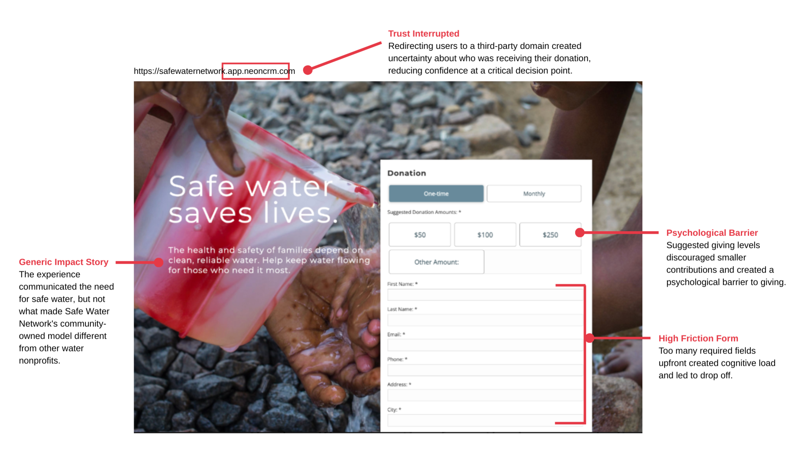
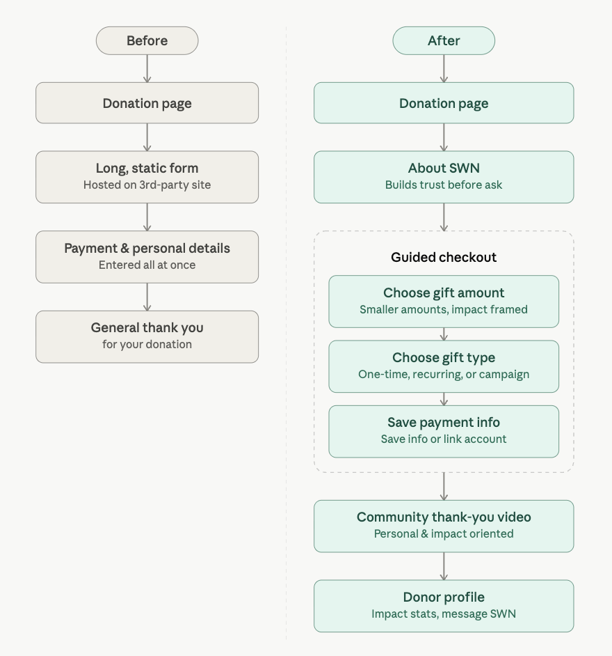
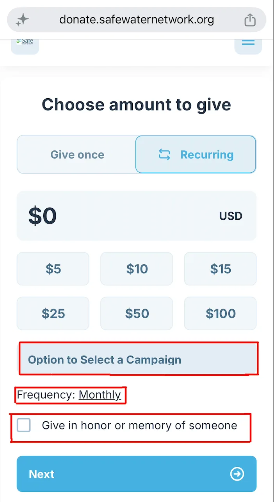
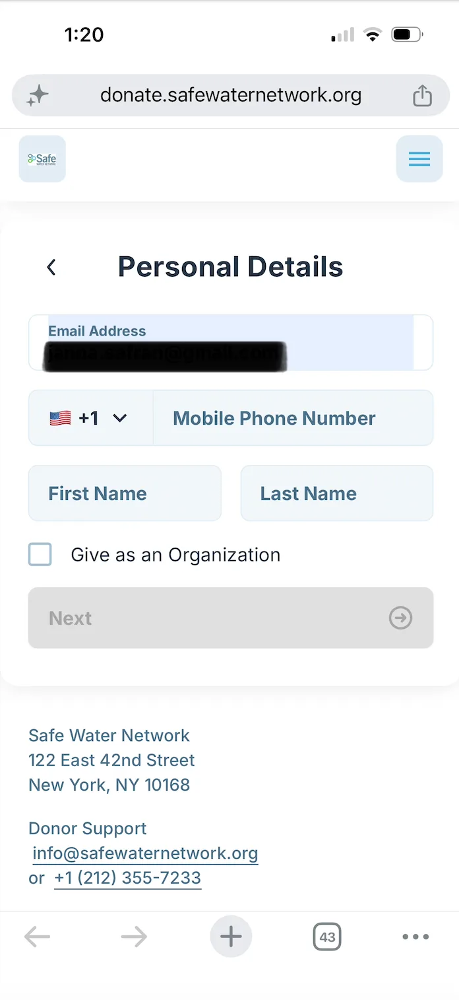
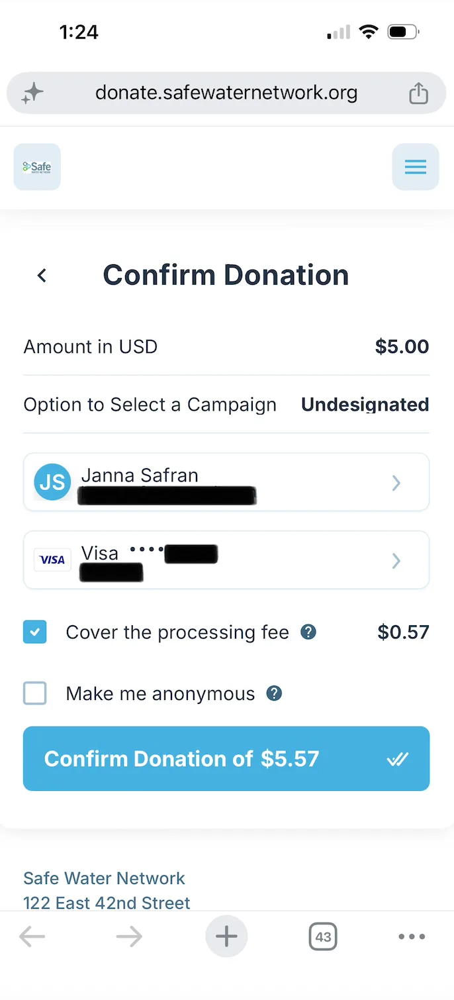
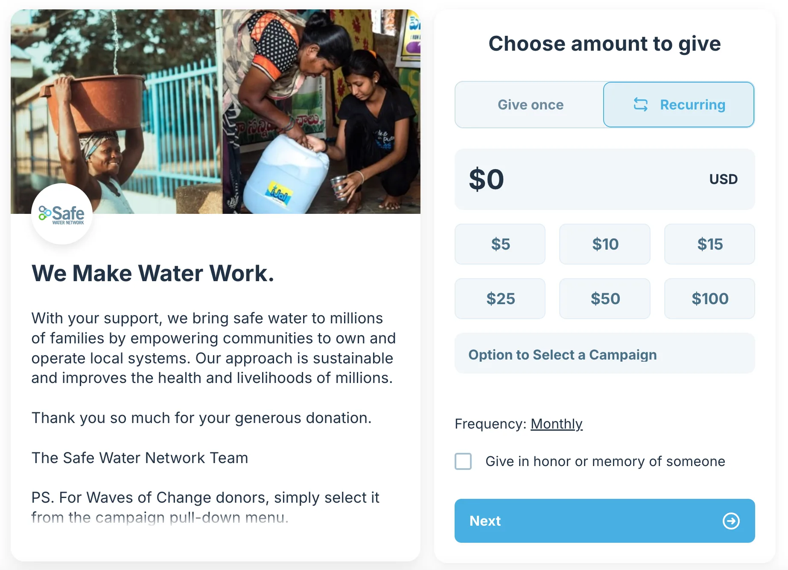

Rebuilding the donor funnel at Safe Water Network to cut abandonment and grow repeat giving
How user research and a redesigned donation funnel cut abandonment by 63% and turned one-time givers into a retained donor cohort.

Overview
Safe Water Network (SWN) is an international nonprofit providing reliable access to safe water across Ghana and India. As part of the fundraising and communications team, I led the redesign of the organization's digital giving funnel. The existing experience routed donors through multiple pages before the donation form, front-loaded data entry, and gave almost nothing back after the gift.
The goal: raise donation conversion, and turn the moment of giving into the start of a donor lifecycle rather than the end of a transaction.
Research & Discovery
Mixed-method donor research
Before redesigning anything, I ran mixed-methods research to understand donor behavior, find the friction points, and identify where conversion and long-term engagement could improve.
Research inputs included:
- Eight years of donor and fundraising data
- Interviews with current and lapsed donors
- Competitive analysis of peer nonprofit giving experiences
- Audit of existing digital giving funnel
- Usability testing of the existing donation flow
The research revealed recurring themes around donor trust, perceived effort, donation psychology, and post-donation engagement. These findings directly informed the redesigned information architecture, giving flow, stewardship experience, and donor communications strategy.

FINDING 1
Donors couldn't see their impact
The donation experience felt transactional rather than mission-driven. Donors struggled to understand where their money was going, who it was helping, and what made Safe Water Network different from other nonprofits. Beyond a tax receipt, donors had few opportunities to engage with the organization, making the donation experience a critical moment to build trust, communicate impact, and strengthen long-term donor relationships.
FINDING 2
Donation amounts created friction
The original donation page promoted giving levels of $100+, which felt inaccessible to many donors. Interviews revealed that smaller contributions felt "not enough," creating a psychological barrier that prevented some supporters from giving at all.
FINDING 3
Supporters wanted to fundraise
Current donors, families, and younger supporters expressed interest in raising money through birthdays, events, in memoriam, and peer-to-peer campaigns. Competitive research showed that leading nonprofit organizations actively promoted peer fundraising, creating additional revenue streams with minimal staff involvement.
FINDING 4
Returning donors were treated like first-time donors
Returning donors were required to re-enter payment information for every gift. This unnecessary friction made repeat giving more difficult than it needed to be and created avoidable barriers to donor retention.
Experience audit
Rather than jumping to redesign, I audited the existing donation experience for where donor needs and organizational goals were misaligned. Combined with the research, this surfaced the core issues: trust, impact clarity, suggested giving levels, and form friction.

Donor journey
Mapping the end-to-end donation experience showed the real issue wasn't any single interaction. It was the journey as a whole. The existing experience processed donations fine, but it treated giving as a one-time transaction instead of the start of a donor lifecycle.
Research showed that donors needed different experiences depending on where they were in their giving journey. First-time donors needed trust and context before being asked to give, while returning donors expected a faster path that recognized their prior relationship with the organization.
The redesigned journey shifted the focus from collecting a donation to building a repeat donor. Each interaction was designed to build trust, cut friction, or deepen engagement after a gift was made. This journey map became the blueprint for the redesigned information architecture, checkout flow, donor segmentation, and post-donation experience.

Design
I guided the redesign by putting myself in the donor's shoes and asking what questions they needed answered at each stage of the journey. Those questions became the structure for the rebuild, ensuring each design decision reduced uncertainty, built trust, or created a clearer path for continued engagement.
Can I trust this organization? Why should I donate here?
The original experience sent donors directly to a third-party form with limited organizational context and a long upfront request for information.
I redesigned the landing page to bring the giving experience onto SWN's branded platform, lead with gratitude, and introduce the organization's model before the ask, helping donors understand who they were supporting and why their gift to SWN mattered.

What impact am I making?
The original experience presented donation amounts as numbers, leaving donors to infer what their contribution could actually support.
I translated each suggested gift into a concrete outcome, from funding a water quality test to helping keep a girl in school, so donors could evaluate their contribution through the impact it could create.
A/B testing compared impact narratives across water safety, healthcare, education, household stability, and livelihoods to understand which messages most influenced donor engagement and giving behavior.
Examples:
$5 — Water Quality Test: Funds one water quality test, keeping 100,000 people safe
$25 — A Year in School: Helps one girl stay in school for a year by freeing up the hours spent walking for water.
$50 — Water for a Home and a Livelihood: Helps a local business owner provide safe services to their community for a year
How do I want to give?
Research showed that donors brought different motivations and priorities to giving, yet the original experience offered a single, undifferentiated path.
I introduced more intentional giving choices, allowing donors to make an unrestricted gift, support a specific campaign or country program, choose their giving frequency, or give in honor or memory of someone. Rather than forcing every donor through the same transaction, the redesigned experience created space for donors to shape the meaning and direction of their gift.

Why are you asking for this information?
The original form asked for too much at once, creating cognitive load, personal-information fatigue, and payment friction at the stage where most donors abandoned the flow.
Request only what's needed
Personal information was separated from payment details, reducing the amount of information donors had to process at one time.

Make payment faster
Digital and saved payment options created a quicker path through checkout, particularly for returning donors

Confirm with transparency
Donors could review their gift amount, campaign designation, payment details, privacy choices, processing-fee coverage, and final total before submitting.

What happens after I donate?
The original journey ended with a generic confirmation message.
I redesigned the post-donation moment as a human thank-you, featuring a video of community members across Ghana and India acknowledging the donor's gift. From there, donors were invited to learn more about SWN's work or continue into their profile, turning confirmation into the first step of continued engagement.

How do I stay connected after giving?
I designed a donor profile to extend the relationship beyond the donation itself. The profile brought together giving history, impact updates, fundraising tools, and self-service account management so donors could understand their impact, stay connected, and continue engaging with SWN over time.

Testing and iteration
I built a fully functional, high-fidelity prototype of the new donor journey and tested it across four rounds with 87 participants: current, lapsed, and former donors, staff, interview participants, and new users. Each round fed rapid design adjustments before testing with a new group, so I could evaluate usability alongside how design choices shaped giving decisions, emotional connection, and continued engagement.
Impact needed to be immediate, concrete, and decision-relevant
What we learned: participants responded best to short, tangible outcomes they could understand instantly, like Water Quality Test.
Iteration: I shortened impact copy, prioritized clear outcome-based hooks, and moved more complex narratives into deeper story content where additional context could be provided.
Emotional connection created momentum
What we learned: the community thank-you video generated the strongest emotional response across testing. Participants described it as "personal," "touching," and "humanizing," and many wanted to learn more about the people featured.
Iteration: the strong positive response directly shaped the community impact stories embedded in the donor profile. The video became a gateway to deeper engagement, carrying the curiosity and emotional connection it created into the broader donor relationship.
Friction was about trust and control
What we learned: participants valued the guided checkout, saved payment options, and clear review step. Recurring giving by default did not create the confusion I was worried about initially.
Iterations: I kept the guided flow, retained recurring giving as the initial selection, added giving frequency to the final confirmation summary, and centralized common donor needs, like tax statements and staff messaging, in the donor profile.
Growth & retention impact
Within six months of launching the redesigned donor journey, online donations rose 30% and donor engagement rose 35%. The new experience also broadened the donor base, surfacing an unexpected segment: parents using profiles, badges, and fundraising tools to introduce children to philanthropy. It also made giving more accessible to younger donors, college students and early professionals, by making it more personal and easier to share. The peer-to-peer fundraising tools became a new acquisition and advocacy channel: in the first six months, donors launched 12 fundraisers on the organization's behalf, raising $80k+ through their own networks.
Strategic value: donor behavior data helped shape five-year goals across fundraising, brand development, marketing, communications, and thought leadership. The redesign did more than improve checkout. It turned one-time donors into a retained cohort of repeat supporters and advocates.
+30%
Online donations Increase in 6 months
+35%
Donor engagement Increase in 6 months
12
Peer-to-peer fundraisers launched New donor advocacy channel
$80k+
Raised through donor-led fundraisers Within first 6 months
Learnings
- Lifecycle strategy starts with the full relationship, not a single touchpoint: looking at the full donor journey surfaced ways to build trust, clarify impact, and give donors a reason to stay engaged after the gift.
- Reducing friction can mean adding context: the redesign added steps, but each one cut uncertainty and made donors more confident in their decision.
- Existing data can reveal new strategic opportunities: donor feedback was already showing up across analytics, emails, support requests, and past interactions. Synthesizing those sources revealed insights that shaped fundraising, brand positioning, thought leadership, and long-term strategy.
